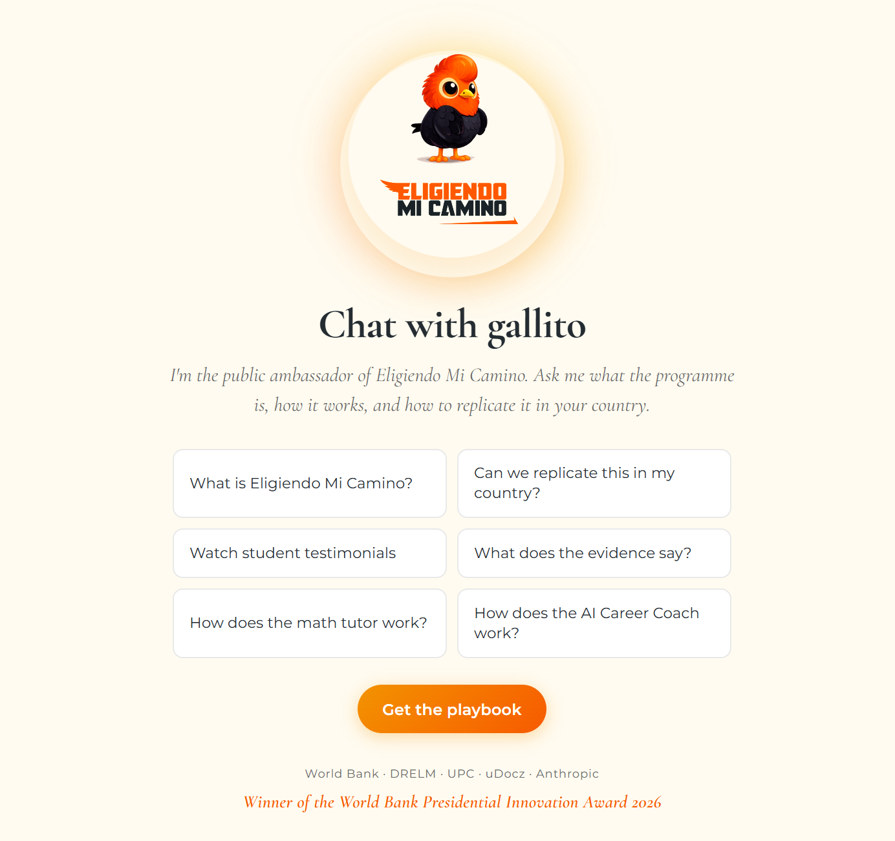

Eligiendo Mi Camino
Orientación vocacional y tutoría de matemática con IA para el 5to año de secundaria en Lima Metropolitana. Dos herramientas al servicio de 6.600 estudiantes en 110 escuelas públicas — con DRELM, uDocz, UPC y el Banco Mundial. El acompañante virtual: el Gallito de las Rocas.
Dos herramientas de IA. Un solo objetivo: que cada estudiante elija con información.
En Perú, solo el 30% de los estudiantes de secundaria continúa a la educación superior. Eligiendo Mi Camino integra al último año de la escuela pública dos productos de IA — un coach de carrera y un tutor de matemática — que conectan lo que se aprende en el aula con las oportunidades profesionales reales. Doce sesiones de 90 minutos, integradas al plan curricular de la DRELM.
Coach de carrera
142 ocupaciones organizadas en 12 sectores económicos del Perú. El estudiante explora rutas de formación (universidad, instituto, técnico), retornos esperados, requisitos y trayectorias reales — acompañado por el Gallito de las Rocas.
Tutor de matemática
Alrededor de 4.000 preguntas alineadas al currículo de 5to de secundaria del Perú. Ejercicios adaptativos, retroalimentación inmediata y acompañamiento del Gallito para practicar sin fricciones.
Estudiantes, docentes y familias cuentan la experiencia.
Testimonios del piloto en escuelas públicas de Lima Metropolitana — cómo el Gallito entró al aula, qué cambió en la conversación de los estudiantes sobre su futuro, y qué aprendieron los docentes acompañando el proceso.
Escala real, en escuelas públicas.
Lanzamiento: 16 de marzo de 2026, en el arranque del año escolar peruano. El piloto llega a 6.600 estudiantes de 5to año en 110 escuelas públicas de Lima Metropolitana, integrado al plan curricular de la DRELM.
Preguntale lo que quieras sobre el programa.
El mismo Gallito que acompaña a los estudiantes en el aula está disponible en el sitio del programa. Escribile en español, inglés o portugués: cómo funciona, qué materiales usa, cómo se implementa en una escuela, qué evidencia hay.
Un chat público con el mascota del programa.
Multilingüe. Sin login. Sin captura de datos personales — está diseñado para explorar el programa, no para inscribirse.
Abrir el chat
Un piloto es una alianza.
Eligiendo Mi Camino es posible gracias a una alianza multisectorial: la autoridad educativa local, una edtech peruana, una universidad, un socio de IA, y el equipo de investigación del Banco Mundial.
Explorá el programa.
Eligiendo Mi Camino en el Banco Mundial
La página oficial del programa: objetivos, alianza, cifras de escala y planes de expansión.
Leer el briefeligiendomicamino.org
El sitio del programa para docentes y estudiantes. Materiales de las 12 sesiones, guía para la escuela, y el chat con el Gallito.
Visitar el sitioVersión Ecuador — Gallo de la Peña
Adaptación al contexto ecuatoriano con datos de ENEMDU y mascota propia. Punto de partida para llevar el modelo a otros países de la región.
Explorar la versión Ecuador